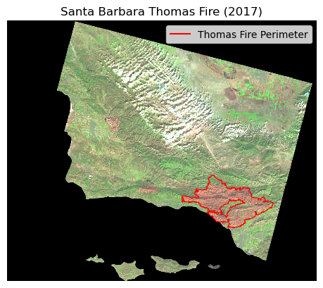

Code
# import libraries
import os
import pandas as pd
import xarray as xr
import numpy as np
import geopandas as gpd
import rioxarray as rioxr
import matplotlib.pyplot as plt
import matplotlib.lines as mlinesAmanda Herbst
Link to GitHub repository: https://github.com/amandaherbst/eds220-thomas-fire
The Thomas fire was a huge wildfire that burned a large part of Santa Barbara and Ventura counties during December 2017, and was the largest recorded California wildfire at the time. The following analysis gives insight on the drastic impacts it had on the local air quality, as well as the land area it burned.
(1) Air Quality Index (AQI)
Outdoor daily air quality measurements in Santa Barbara County in 2017 and 2018 were retrieved from the US Environmental Protection Agency.
(2) Landsat raster data
A simplified collection of bands (red, green, blue, near-infrared and shortwave infrared) from the Landsat Collection 2 Level-2 atmosperically corrected surface reflectance data, collected by the Landsat 8 satellite. The data was accessed and pre-processed in the Microsoft Planetary Computer to remove data outside land and coarsen the spatial resolution (Landsat Collection in MPC). Data should be used for visualization purposes only.
(3) Fire Perimeters
A shapefile of fire perimeters in California during 2017, from the CA state geoportal.
# read in 2017 and 2018 air quality data
aqi_17 = pd.read_csv('https://aqs.epa.gov/aqsweb/airdata/daily_aqi_by_county_2017.zip')
aqi_18 = pd.read_csv('https://aqs.epa.gov/aqsweb/airdata/daily_aqi_by_county_2018.zip')
# import landsat raster data by calling a filepath
landsat = rioxr.open_rasterio(os.path.join(os.getcwd(),'data', 'landsat8-2018-01-26-sb-simplified.nc'))
# import ca fire perimeters
ca_fire = gpd.read_file('data/California_Fire_Perimeters_2017/California_Fire_Perimeters_2017.shp')Santa Barbara county is located on the coast of Southern California (coordinates: 34.6099° N, 120.0665° W) and has a Mediterranean biome that has recently experienced prolonged droughts and is prone to wildfires.
Take a look at the initial data:
| State Name | county Name | State Code | County Code | Date | AQI | Category | Defining Parameter | Defining Site | Number of Sites Reporting | |
|---|---|---|---|---|---|---|---|---|---|---|
| 0 | Alabama | Baldwin | 1 | 3 | 2017-01-01 | 21 | Good | PM2.5 | 01-003-0010 | 1 |
| 1 | Alabama | Baldwin | 1 | 3 | 2017-01-04 | 22 | Good | PM2.5 | 01-003-0010 | 1 |
| 2 | Alabama | Baldwin | 1 | 3 | 2017-01-10 | 19 | Good | PM2.5 | 01-003-0010 | 1 |
| 3 | Alabama | Baldwin | 1 | 3 | 2017-01-13 | 30 | Good | PM2.5 | 01-003-0010 | 1 |
| 4 | Alabama | Baldwin | 1 | 3 | 2017-01-16 | 16 | Good | PM2.5 | 01-003-0010 | 1 |
| State Name | county Name | State Code | County Code | Date | AQI | Category | Defining Parameter | Defining Site | Number of Sites Reporting | |
|---|---|---|---|---|---|---|---|---|---|---|
| 0 | Alabama | Baldwin | 1 | 3 | 2018-01-02 | 32 | Good | PM2.5 | 01-003-0010 | 1 |
| 1 | Alabama | Baldwin | 1 | 3 | 2018-01-05 | 34 | Good | PM2.5 | 01-003-0010 | 1 |
| 2 | Alabama | Baldwin | 1 | 3 | 2018-01-08 | 15 | Good | PM2.5 | 01-003-0010 | 1 |
| 3 | Alabama | Baldwin | 1 | 3 | 2018-01-11 | 19 | Good | PM2.5 | 01-003-0010 | 1 |
| 4 | Alabama | Baldwin | 1 | 3 | 2018-01-14 | 25 | Good | PM2.5 | 01-003-0010 | 1 |
<xarray.Dataset>
Dimensions: (y: 731, x: 870, band: 1)
Coordinates:
* y (y) float64 3.952e+06 3.952e+06 ... 3.756e+06 3.755e+06
* x (x) float64 1.213e+05 1.216e+05 ... 3.557e+05 3.559e+05
* band (band) int64 1
spatial_ref int64 0
Data variables:
red (band, y, x) float64 ...
green (band, y, x) float64 ...
blue (band, y, x) float64 ...
nir08 (band, y, x) float64 ...
swir22 (band, y, x) float64 ...array([3952395., 3952125., 3951855., ..., 3755835., 3755565., 3755295.])
array([121305., 121575., 121845., ..., 355395., 355665., 355935.])
array([1])
array(0)
[635970 values with dtype=float64]
[635970 values with dtype=float64]
[635970 values with dtype=float64]
[635970 values with dtype=float64]
[635970 values with dtype=float64]
| index | OBJECTID | YEAR_ | STATE | AGENCY | UNIT_ID | FIRE_NAME | INC_NUM | ALARM_DATE | CONT_DATE | ... | GIS_ACRES | COMMENTS | COMPLEX_NA | COMPLEX_IN | IRWINID | FIRE_NUM | DECADES | SHAPE_Leng | SHAPE_Area | geometry | |
|---|---|---|---|---|---|---|---|---|---|---|---|---|---|---|---|---|---|---|---|---|---|
| 0 | 19836 | 41429 | 2017 | CA | CCO | VNC | BROOK | 00042450 | 2017-05-23 | 2017-05-24 | ... | 10.043819 | per walked track | None | None | None | None | 2010 | 1246.055781 | 59473.666651 | POLYGON ((-13229812.974 4046876.486, -13229786... |
| 1 | 19837 | 41430 | 2017 | CA | CCO | VNC | PACIFIC | 00075307 | 2017-09-09 | 2017-09-09 | ... | 1.190109 | Final Walked track. Small spot to the north east | None | None | None | None | 2010 | 561.418202 | 7081.369481 | POLYGON ((-13286872.985 4074523.355, -13286895... |
| 2 | 19838 | 41431 | 2017 | CA | CCO | VNC | GRADE | 00054660 | 2017-07-04 | 2017-07-05 | ... | 47.194027 | None | None | None | None | None | 2010 | 2587.259697 | 279911.825212 | POLYGON ((-13244637.580 4056332.530, -13244620... |
| 3 | 19839 | 41432 | 2017 | CA | CCO | VNC | PACIFICA | 00051791 | 2017-06-24 | 2017-06-24 | ... | 1.158548 | GPS track | None | None | None | None | 2010 | 501.178102 | 6859.664843 | POLYGON ((-13229521.754 4046254.111, -13229510... |
| 4 | 19840 | 41433 | 2017 | CA | CCO | VNC | MONTVIEW | 00040196 | 2017-05-15 | 2017-05-15 | ... | 2.893327 | Rough per description. waiting for walked GPS... | None | None | None | None | 2010 | 484.388887 | 17133.006159 | POLYGON ((-13229663.036 4046858.853, -13229667... |
5 rows × 23 columns
Additional preliminary exploration:
AQI 2017 dims: (326801, 10)
AQI 2018 dims: (327537, 10)landsat CRS: EPSG:32611
CA Fire Perimeter CRS: epsg:3857(654338, 10)Index(['date', 'aqi', 'category', 'defining_parameter', 'defining_site',
'number_of_sites_reporting'],
dtype='object')date datetime64[ns]
aqi int64
category object
defining_parameter object
defining_site object
number_of_sites_reporting int64
dtype: objectpandas.core.indexes.datetimes.DatetimeIndexFrozen({'y': 731, 'x': 870}) Coordinates:
* y (y) float64 3.952e+06 3.952e+06 ... 3.756e+06 3.755e+06
* x (x) float64 1.213e+05 1.216e+05 ... 3.557e+05 3.559e+05
spatial_ref int64 0True# map false color image with thomas fire perimeter
fig, ax = plt.subplots()
# plot false color image
landsat[['swir22','nir08','red']].to_array().plot.imshow(robust = True,
ax = ax)
# plot thomas fire perimeter in red
thomas.boundary.plot(ax = ax,
color = "red",
linewidth = 0.8)
# create thomas fire patch for legend
thomas_patch = mlines.Line2D([],[],
color = "red",
linestyle = "-",
label = "Thomas Fire Perimeter")
# add legend to label thomas fire perimeter
ax.legend(handles = [thomas_patch],
frameon = True,
loc = 'upper right')
# add map title
plt.title('Santa Barbara Thomas Fire (2017)')
# turn off axes
ax.axis('off')
plt.show()